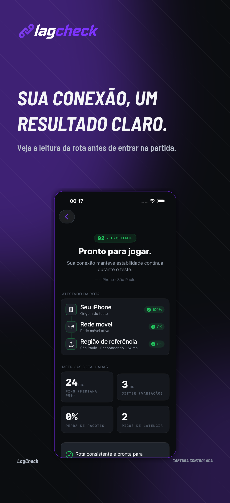

LagCheckapp-store · pt-BR · #1Fonte: ios · simulator_captureVariante: clarityEstado: captured controlled scenarioUma mensagem centrada na clareza do resultado aumenta a compreensão inicial sem transformar a leitura em ping de jogo.